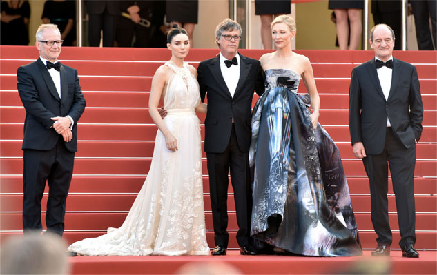

Depuis ses origines, le Festival de Cannes est fidèle à sa vocation fondatrice : révéler et mettre en valeur des œuvres pour servir l'évolution du cinéma, favoriser le développement de l'industrie du film dans le monde et célébrer le 7ème art à l’international.
C’est quoi la « Sélection officielle » ?Elle met en valeur la diversité de la création cinématographique à travers différents volets et d’abord la Compétition et Un Certain Regard. Des films qui illustrent le « cinéma d’auteur grand public» sont présentés en Compétition et Un Certain Regard met l’accent sur des œuvres originales dans leur propos et leur esthétique. La Sélection officielle repose aussi sur les films Hors Compétition, les Séances Spéciales et les Séances de minuit, Cannes Classics et la sélection Cinéfondation de films d’école.
Que représentent aujourd’hui les « Marches rouges » ?C’est un des aspects de la manifestation et bien sûr la partie la plus médiatique de l’événement. Pour l’organisation, c’est d’abord l’opportunité d’accueillir pour la première fois et avec les mêmes égards, les plus grands artistes du cinéma mondial et les talents émergents. C’est également l’occasion d’honorer la créativité des artistes sur laquelle repose le prestige du Festival.
 En quoi consistent les sélections non compétitives ?Les films Hors Compétition sont souvent des films-évènements qui marquent l’année de cinéma et les Séances Spéciales et Séances de minuit offrent une exposition sur mesure à des œuvres plus personnelles. Les films du patrimoine en copies restaurées sont mis en valeur à Cannes Classics qui accueille également des hommages et des documentaires sur le cinéma. En dehors de la Sélection, les cinéphiles ont aussi l’opportunité de découvrir le cinéma autrement au travers de Leçons, d’hommages ou d’expositions…
Quelle place est réservée au court-métrage à Cannes ?
A Cannes, le court métrage est représenté par la Compétition, à l’issue de laquelle le Jury des courts métrages remet une Palme d’or et par le Short Film Corner, un espace professionnel dédié aux rencontres, aux échanges, à la promotion des films.
En 2010, le Festival a créé « Cannes Court Métrage » qui réunit ces deux entités dans une dynamique complémentaire pour offrir un panorama complet de la création mondiale au format court et stimuler la créativité de ses auteurs.
Le Festival est très attentif à découvrir de nouveaux talents et à servir de tremplin à la création. Le développement de « Cannes Court Métrage » va dans ce sens. Plusieurs actions destinées à soutenir les talents du futur ont déjà été mises en œuvre: la Caméra d’Or récompense le meilleur premier film présenté soit en Sélection officielle, soit à la Quinzaine des Réalisateurs ou à la Semaine de la Critique.
Quant à la Cinéfondation, qui présente des films d’écoles de cinéma dans le cadre de la Sélection officielle et organise également la Résidence et l’Atelier, elle est un observatoire sur les tendances du cinéma de demain.
Les films sélectionnés et les professionnels accrédités au Festival viennent du monde entier et la couverture médiatique de l’événement est internationale. Le Festival de Cannes offre par ailleurs à tous les pays producteurs de cinéma la possibilité de présenter la richesse de leur cinématographie dans le cadre du Village international, qui comptait plus de 40 pays en 2012.
Pour continuer d’encourager cette dimension, 6 nouvelles langues ont été ajoutées au site officiel en 2010. En plus du français et de l’anglais, les internautes peuvent désormais suivre la manifestation en espagnol, portugais, chinois, japonais, arabe et russe.
Le Festival de Cannes s’est très tôt appuyé sur son Marché du Film pour promouvoir la double nature du cinéma, culturelle et économique. Aujourd’hui, avec plus de 10.500 participants et 1500 projections, il est le premier marché du monde et il contribue au dynamisme de l'industrie mondiale du cinéma. Il est indissociable du Festival en ce sens qu’il favorise aussi la rencontre et qu’il offre aux professionnels accrédités des services et des outils ciblés qui leur facilitent l’échange, la négociation et la découverte.
Que fait le Festival pour le grand public ?
La carrière d’un film et la réputation d’un auteur reposent avant tout sur son accueil en salles. Bien qu’il soit réservé aux professionnels, le Festival est attentif à cette réalité et se prépare d’ailleurs à mieux adapter son accueil des cinéphiles.
Depuis 2012, le film d’ouverture sort en salles en France le jour de sa présentation à Cannes et la cérémonie d’Ouverture est diffusée dans les cinémas afin que les spectateurs puissent vivre en direct la soirée de lancement du Festival.
A Cannes, le Cinéma de la Plage, salle hors les murs, propose chaque soir un film – et depuis 2010 parfois en avant-première mondiale- dans le cadre d’une programmation thématique. Ce sont des projections en plein air ouvertes à tous qui représentent un lien fort avec le public.
Le Festival est solidement ancré dans son histoire, mais il est aussi très attentif à accueillir la nouveauté et l’originalité. Au fil des années, il a évolué en cherchant à préserver ses valeurs essentielles : la cinéphilie, la découverte de nouveaux talents, l’accueil des professionnels et des journalistes venus du monde entier pour contribuer à la naissance et à la diffusion des films.
Lors de chaque édition, des projets voient le jour, des expériences se transmettent, des cultures se découvrent : c’est aussi cette effervescence qui fait du Festival de Cannes le reflet de son époque.